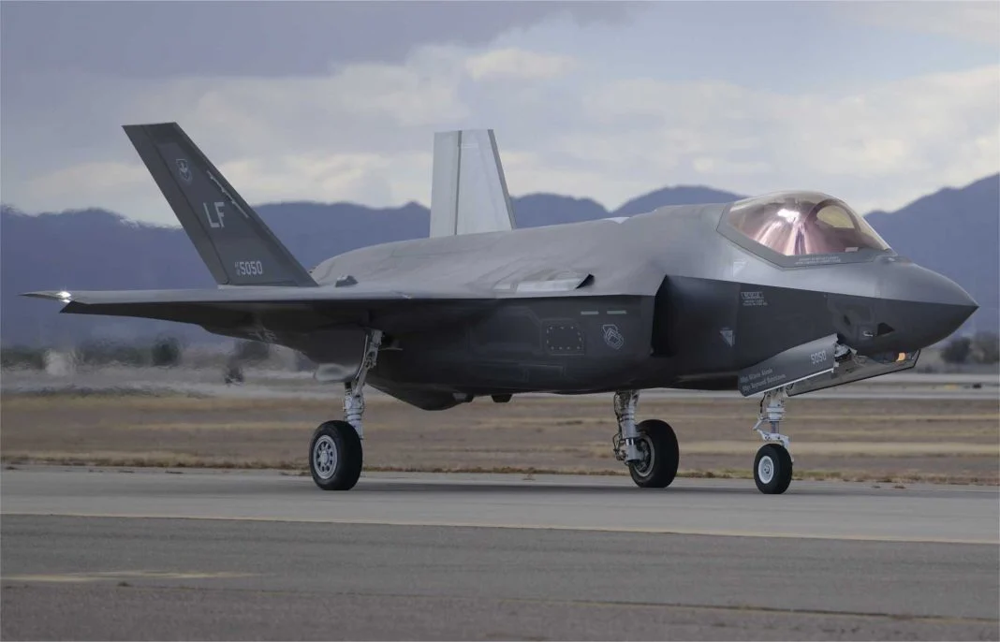
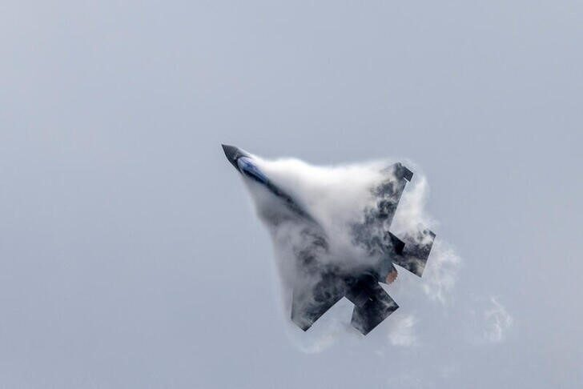
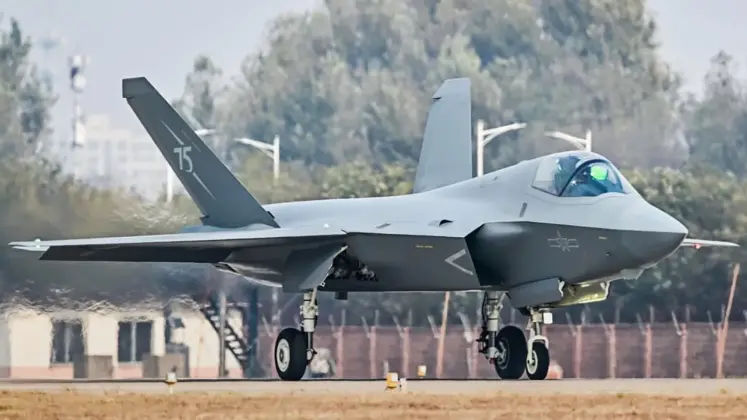
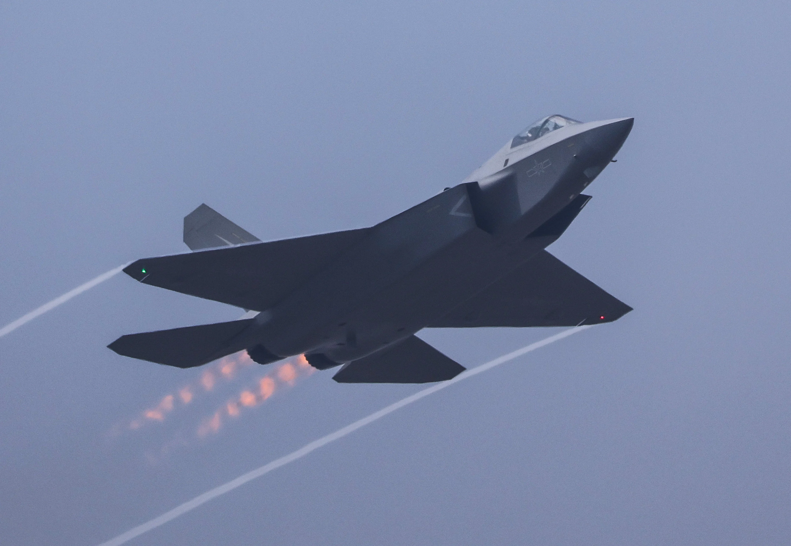

To figure out how China copied America we will take an example of the F-35 and the J-35. Let's dive into these two jets.
The F-35 is a 5th generation fighter jet developed by the American Lockheed Corporation. This is a single seat, single engine multirole fighter jet. It was developed for both air superiority and strike mission. Like the first ever 5th generation jet F-22 raptor it also has stealth technology and thus has a small radar cross section. The F-35 has the worlds most advanced avionics in it. It can be called a flying computer. This jet made its first flight on 2006 as the second built 5th generation fighter jet.


Photo: F-35The J-35 is also a 5th generation fighter jet but developed by the Chinese Shenyang Aircraft Corporation. It is a single seat, dual engine multirole fighter jet. The jet is primarily an air superiority jet but also for ground stike missions. It is also a stealth fighter jet like the F-35 and so has a small cross section area. This Chinese jet has flown first on 2023.


Photo: J-35In the above sections we knew briefly about these two jets. Now to compare these jets we look firstly at their aerodynamic design. These jets have similarities in nose, tail, wing, cockpit location and even landing gear location. But to note that some small changes in aerodynamics can lead to bigger changes in consequences. Secondly, the powerplant, the F-35 comes with a single turbofan engine whereas the J-35 is powered by two turbofan jet engines. Thirdly, the avionics of F-35 is unmached to any fighter jet ever made. To sum up all, there are more differences between these jets rather than their similarities.
"China copied America", it can't be told. So, the flashy headline is not valid. You know why!